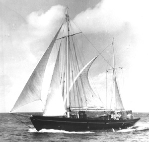

|  copyright - WHOI |
|
Rumor has it that Caryn was originally built specifically for
smuggling. When the vessel was first launched, she carried 4,000 square
feet of canvas. WHOI purchased Caryn in 1947 from her third owner,
C.R. Hotchkiss of New York.
At WHOI, Caryn made 110 cruises, mostly along the East Coast through
the Caribbean and around Bermuda. All types of oceanography were undertaken.
The vessel was sold in 1958 to S.H. Swift, was renamed Black Swan,
and engaged in charter trade. On New Year’s Eve, 1974, at St. Maarten’s
Island, West Indies, the vessel burned.